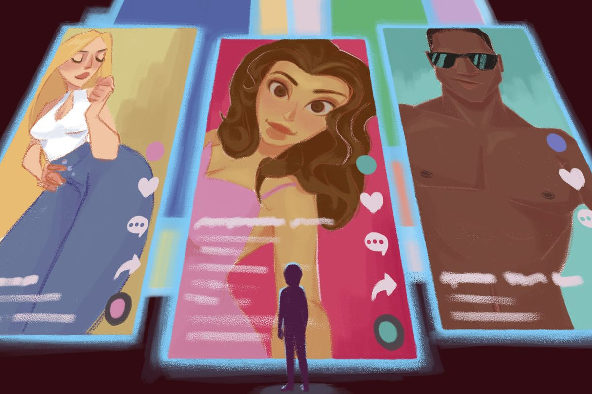
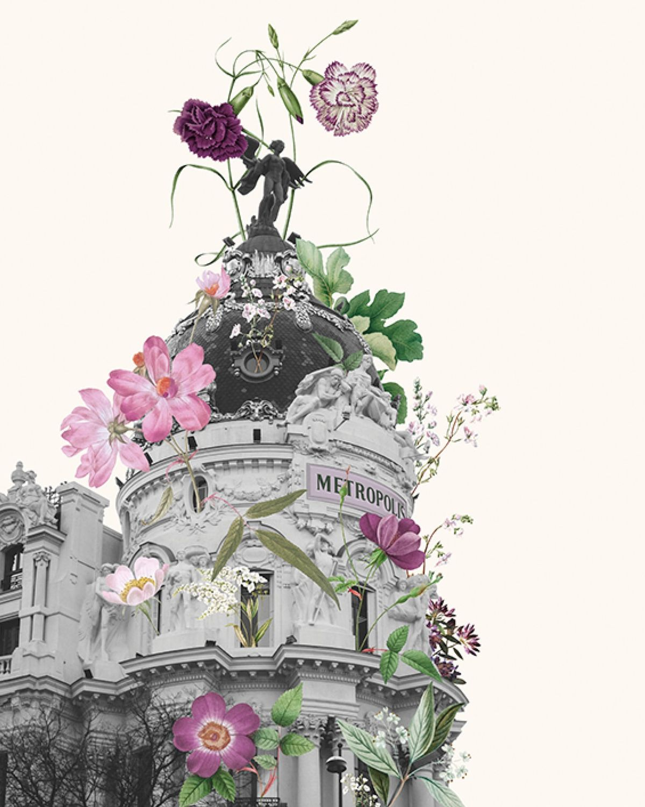
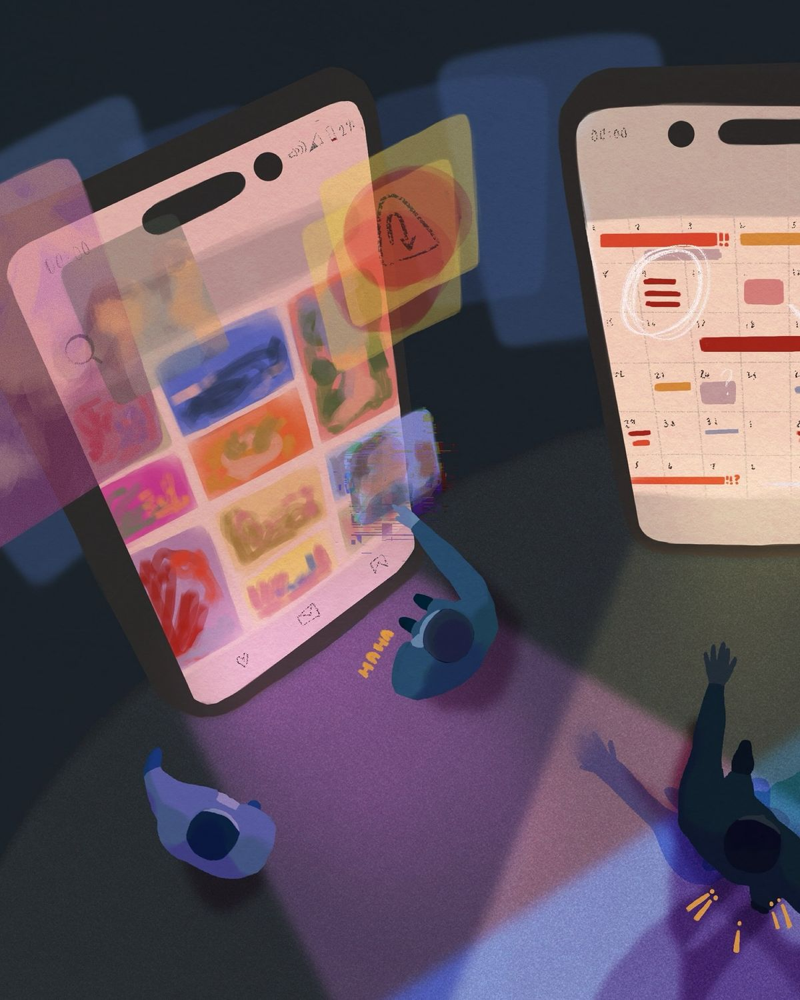

Atención selectiva
¿Qué detalle atrapa la mirada y qué contexto queda fuera?
Exposición digital · entrada libre · todas las publicaciones son ficticias
Saltar a la exposiciónAntes de que aprendieras a juzgar tu cuerpo, alguien ya había decidido qué cuerpos debían ser admirados.
«No todo lo que ves es real. No todo lo que parece perfecto es saludable».

editado, filtrado, seleccionado

ver el feed ↗
entrar al museo ↗
probar el laboratorio ↗ARCHIVO VISUAL · 01—04
Imágenes para observar con curiosidad, no para compararnos.
UNA LECTURA DESDE PROCESOS COGNITIVOS
La exposición observa cómo atendemos, comparamos, aprendemos patrones y revisamos lo que pensamos.
¿Qué detalle atrapa la mirada y qué contexto queda fuera?
¿Con quién nos comparamos y qué tan justa es esa referencia?
¿Cuándo una idea repetida empieza a sentirse como una regla?
¿Podemos observar un pensamiento y preguntar de dónde viene?
EL RECORRIDO · 6 SALAS
Analiza publicaciones ficticias.
explorar ↗Cómo cambian los ideales según la época.
explorar ↗Quién produce los estándares y quién gana.
explorar ↗Debates con varias perspectivas.
explorar ↗Experimentos para cuestionar mensajes.
explorar ↗Tu identidad no cabe en una fotografía.
explorar ↗